Eritema ab igne (EAI), latim para "vermelhidão do fogo" (ab Igne = from the fire), é uma condição de pele causada por exposição crônica e repetida a calor moderado ou radiação infravermelha. Frequentemente denominada "síndrome da pele tostada", ela se manifesta como uma erupção cutânea reticular (semelhante a uma rede) distinta, ocasionalmente eritematosa e telangiectásica que progride para hiperpigmentação. Geralmente associada a hábitos relacionados ao trabalho ou a atividades pessoais. Mas, não é uma queimadura.
Epidemiologia
Atualmente, esta condição tende a ocorrer com mais frequência, sendo associada a uma variedade de instrumentos modernos, incluindo travesseiros aquecidos, aquecedores, cobertores térmicos, bolsas de água quente, laptops no colo e smartphones, exposição ocupacional (por exemplo, chefs, joalheiros). Uso frequente de saunas ou lareiras. Além disso, a lombalgia crônica e o consequente uso repetido e prolongado de calor localizado para aliviar esse sintoma leva a maior incidência de eritema ab igne nessa área. Indivíduos com dor crônica (por exemplo, artrite) e com neuropatia ou diabetes (sensibilidade reduzida ao calor) estão em maior risco.
Fisiopatologia
A exposição prolongada à radiação infravermelha ou ao calor moderado leva à vasodilatação reticulada, que corresponde ao padrão do plexo venoso do processo da doença com danos nos vasos sanguíneos superficiais e subsequente deposição de hemossiderina. O calor danifica os capilares, levando ao vazamento de hemácias, e a quebra da hemoglobina resulta em hemossiderina, causando a descoloração amarronzada. Outras mudanças incluem alterações nas fibras elásticas, atrofia epidérmica e acumulação de melanina na derme.
Manifestações clínicas
Inicialmente, a lesão é eritematosa e às vezes caracterizada por mudanças superficiais (atrofia, xerose, telangiectasia). Porém, depois de repetidas exposições ao calor, desenvolve-se a hiperpigmentação reticulada clássica azul, roxa ou marrom. Geralmente é assintomática, embora alguns pacientes relatem prurido na fase aguda. Pode ocorrer em qualquer local, sendo mais frequente a distribuição assimétrica. As alterações precoces da pele normalmente desaparecem espontaneamente dentro de várias semanas a meses, após a remoção da fonte de calor da pele. No entanto, lesões de longa duração, podem estar associadas à hiperpigmentação permanente.
A exposição crônica à radiação infravermelha pode resultar em mudanças semelhantes às observadas com radiação ultravioleta. O carcinoma pode se desenvolver a partir de queratinócitos displásicos abrigados dentro da hiperpigmentação reticulada. Foram relatados em pacientes após exposição crônica à radiação infravermelha, ceratose térmica e carcinoma de células escamosas.
Em resumo:
Estágio inicial: vermelhidão transitória, semelhante a renda.
Estágio crônico: hiperpigmentação marrom-avermelhada com padrão reticulado.
Diagnóstico
O diagnóstico é baseado na história e quadro clínico, uma vez que as alterações histológicas não são específicas. Portanto, a biópsia deve ser considerada apenas em casos selecionados e para descartar malignidade se as lesões ulcerarem ou engrossarem. Pacientes com eritema ab igne têm história de exposições repetidas ao calor em temperaturas próximas ao limiar de queimadura (43-47 °C). É importante questionar sobre a exposição ocupacional a fontes de calor, por exemplo, trabalhadores de fundição, padeiros.
Diagnóstico Diferencial
Deve incluir livedo reticular, paniculite, efeitos colaterais de alguns medicamentos (amantadina e memantina), vasculite e linfoma cutâneo de células T.
Tratamento
Nenhuma terapia definitiva está disponível para eritema ab igne. Reduzir ou eliminar a exposição à fonte de calor no início da doença pode reverter a hiperpigmentação. Em casos de curta duração, a resolução completa ocorre com a remoção da fonte de calor. Os casos mais avançados podem responder à tretinoína para melhorar a textura, creme de 5-fluorouracil ou laserterapia (por exemplo, laser de corante pulsado) para pigmentação.
A prevenção é a chave. Educar os pacientes para evitar contato prolongado com fontes de calor. Usar barreiras como toalhas se precisarem usar almofadas de aquecimento.
REFERÊNCIAS BIBLIOGRÁFICAS
1. [Erythema ab igne, a peculiar side effect of laptops]. Escobar Seoane L, Valdés Tascón F.Semergen. 2016 Jul-Aug;42(5):e56-7.
2. Clinicopathologic Correlations in Erythema ab Igne: A Series of 5 Patients and Review of the Literature. Segurado Tostón N, Puebla Tornero L, Revilla Nebreda D, Santos-Briz Terrón A.Actas Dermosifiliogr. 2023 Apr;114(4):356-359.
3. Erythema ab igne. Cabrera Hernández A, Beà Ardebol S, Medina Montalvo S, Trasobares Marugán L.Reumatol Clin. 2016 Jul-Aug;12(4):233-4.
4. [Extensive ab igne erythema in the context of use of electric blanket]. Parra García JJ, Sánchez MS, García Martínez E.Semergen. 2024 Jan-Feb;50(1):102068.
5. A case of erythema ab igne with histopathological features resembling keratosis lichenoides chronica. Shahin AB, Coias J, Mastin M, Lehman JS, Anderson K.Pediatr Dermatol. 2025 Jan-Feb;42(1):196-198.
Atlas de imagens 14


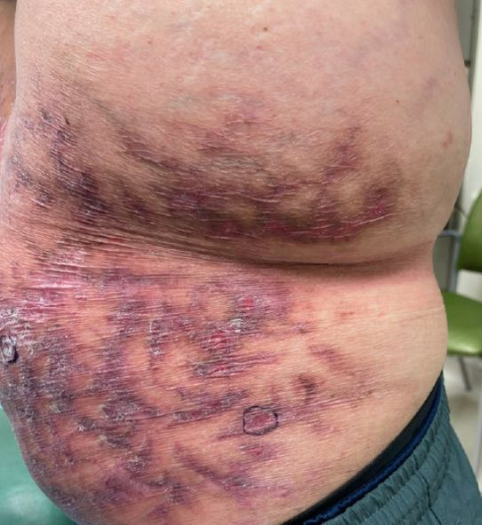

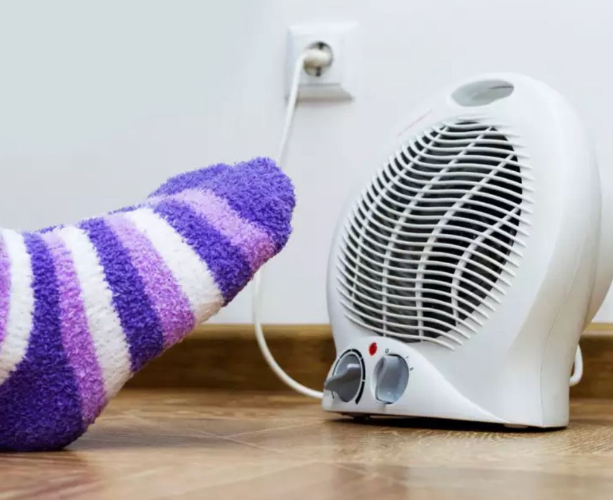

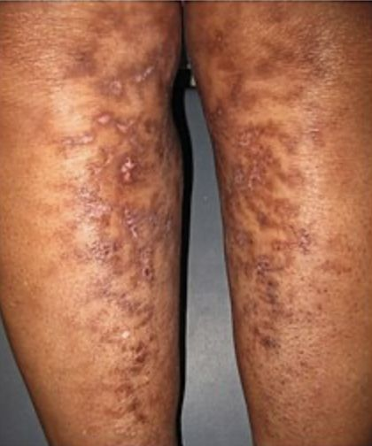

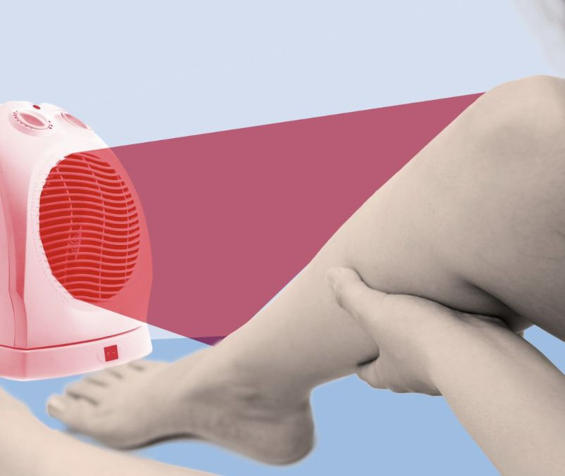

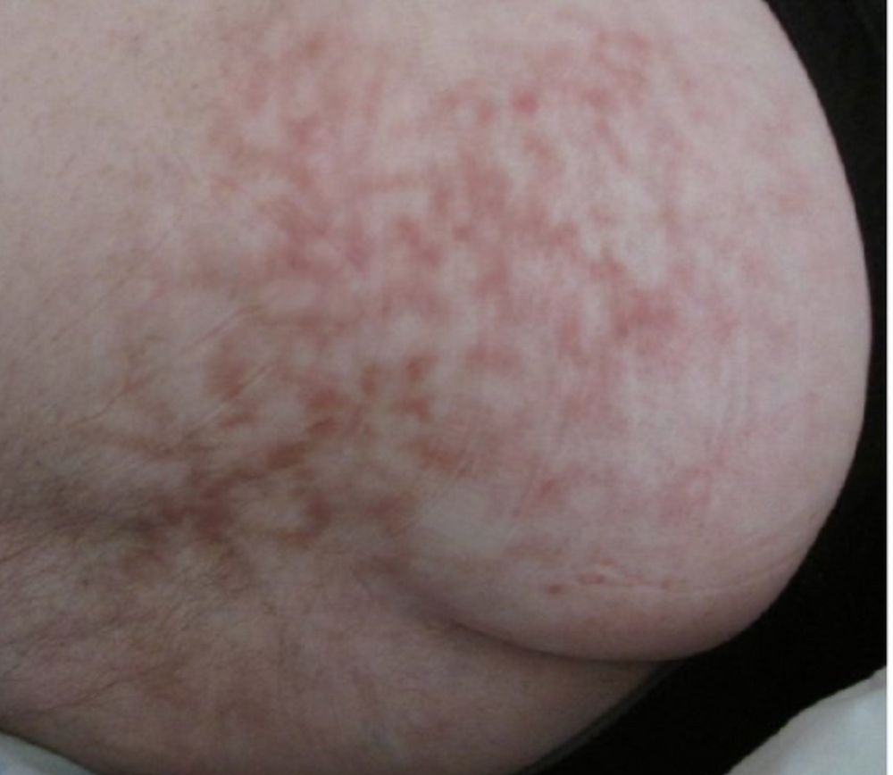

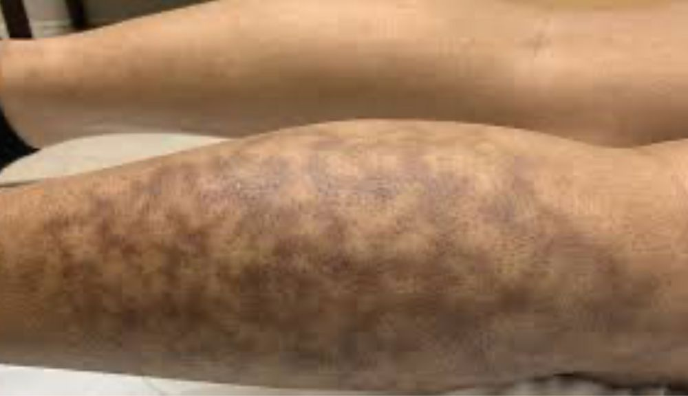

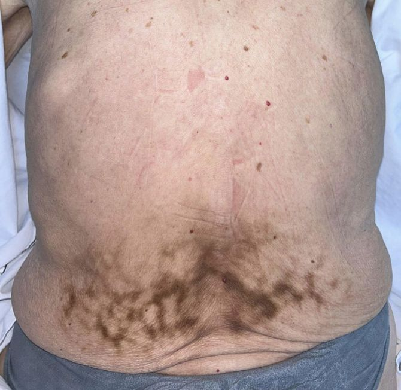

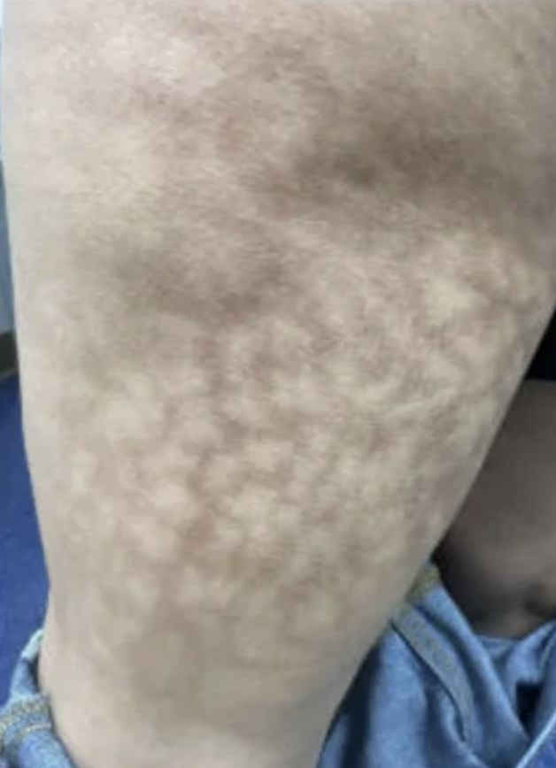

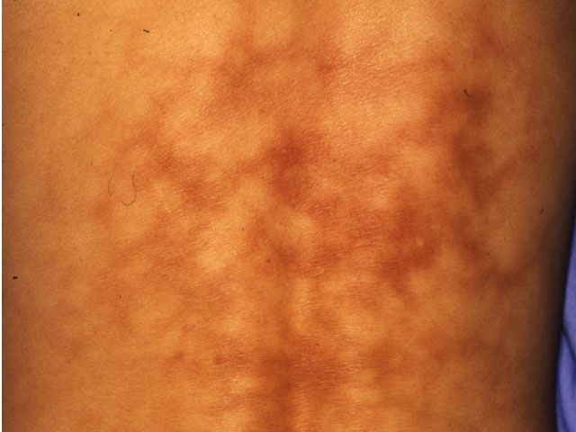

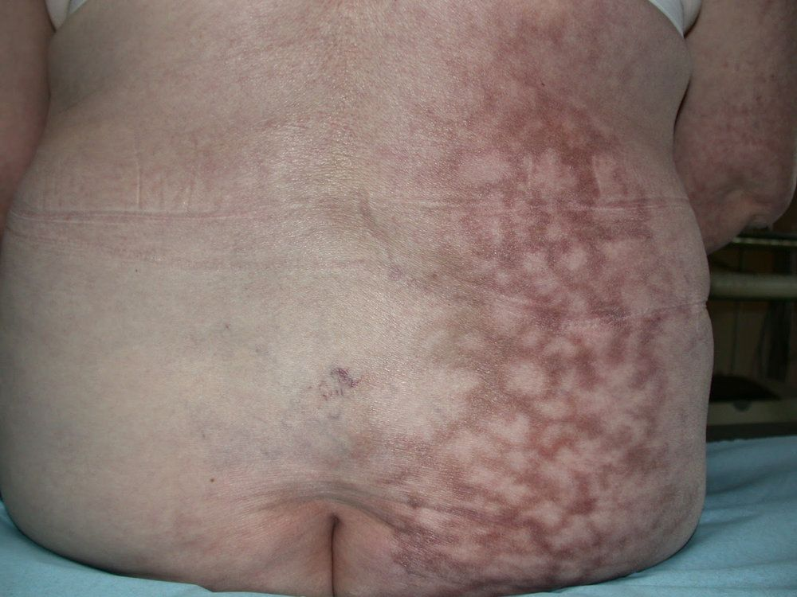

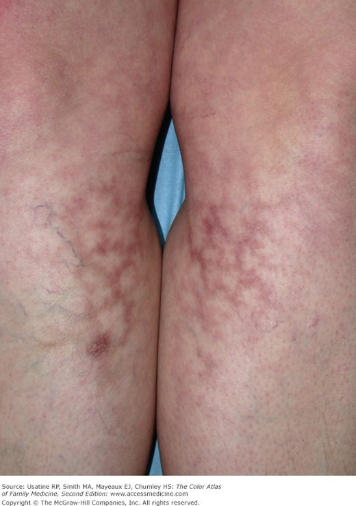

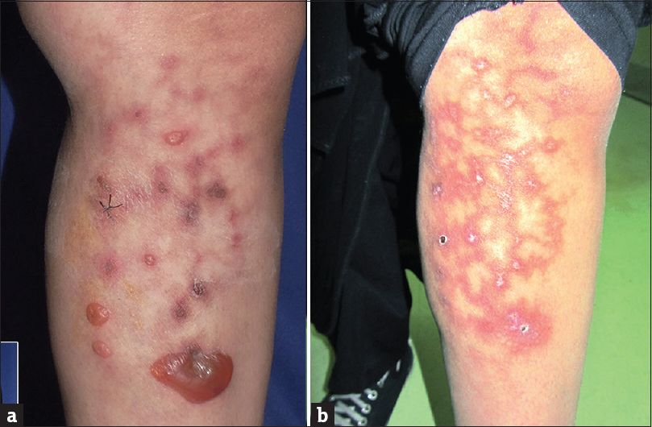

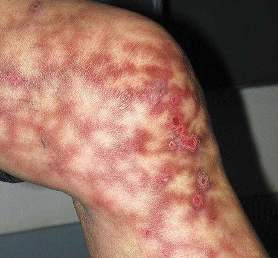
Na Skin Prime
Como podemos ajudar
Entre os recursos citados para Eritema Ab Igne, estes estão disponíveis na clínica:
Diagnóstico